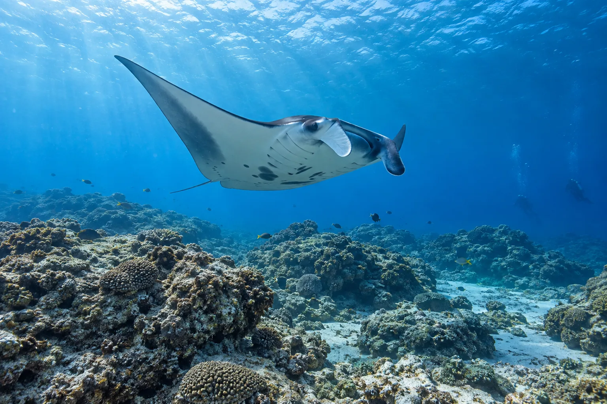

Manta Scramble
Ishigaki, Okinawa, Japon · plongée, snorkeling

Station de nettoyage où les raies manta viennent se faire toiletter.
- Lieu
- Ishigaki, Okinawa, Japon
- Niveau
- Débutant
- Activités
- plongée, snorkeling
- Type d'eau
- Mer / océan
- Coordonnées
- 24.45, 124.12 (position approximative du secteur)
Dangers à connaître
- Courant.
- Mantas protégées.
Le conseil d'Ocean Buddy
Reste au sol ou à distance et laisse les mantas s’approcher.
Ouvrir dans Ocean Buddy Télécharger sur l'App Store
Source : Fiche Ocean Buddy · septembre 2026 · à vérifier localement.